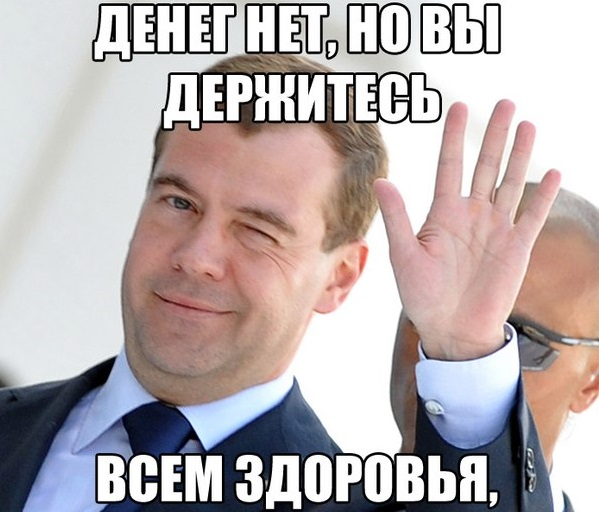

Путин прокомментировал фразу
Медведеваденег нет, но вы держитесь
Слова российского премьер-министра Дмитрия
Медведева, пожелавшего крымским
пенсионерам
«хорошего настроения» в ответ на вопрос о
повышении пенсии, были вырваны из контекста. Об
этом заявил президент РФ Владимир Путин. Я не видел, чтобы
Дмитрий Анатольевич говорил по этому поводу. Всегда
можно или из контекста как такового взять какую-то фразу,
либо взять из того общего разговора: тоже по словам все
жет совпадать, но по духу смысл, может быть, как-то иначе
смотреться
, — сказал Путин.
В России все хорошо и даже лучше
Утверждение о том, что Россия находится в состоянии
глубокого экономического кризиса, в
очередной раз подвергнуто сомнению. По крайней мере,
к выводу, что не все в стране так плохо, пришел
первый вице-премьер России Игорь Шувалов. По словам
высокопоставленного
чиновника, сказанным им в интервью телеканалу
"Россия 24", ситуация в экономике РФ в первом
квартале 2015 г. оказалась чуть лучше ожиданий.

Складывается все неплохо. Наши ожидания в конце
2014 года о первом полугодии 2015 года были жестче,
ожидали большего негатива. Но это не потому, что
так звезды сложились, это активная работа ЦБ,
правительства, и президент постоянно
занимается экономической повесткой
, -
пояснил первый вице-премьер.

В Ростовском зоопарке появился на свет
детеныш кошачьего лемура
Детеныш еще совсем маленький, поэтому мама носит его
на животе. Чуть позже он переберётся к ней на спину, а
в возрасте 5-6 месяцев станет полностью
самостоятельным, - рассказали в пресс-службе
Ростовского зоопарка.
Пока лемур еще маленький, он с родителями будет жить
в отдельном вольере.
В России запретили скачивать курсовые и
рефераты из Сети
Незбагойно
Роскомнадзор заблокировал ресурс refoteka.ru, на
котором размещались рефераты, курсовые и
дипломные работы. Соответствующее решение
было принято Ленинским районным судом
Ставрополя, который признал распространение
данной информации нарушением
законодательства. Об этом пишет CNews со
ссылкой на картотеку anitzapret.info.
Истцом в ходе процесса выступил местный прокурор,
который обратил внимание на то, что на
заблокированном сайте для всех желающих за деньги
были доступны готовые курсовые и дипломные
работы. При этом данные научные труды являются
объектом интеллектуальной собственности.
"В случае заказа научных работ на
рассматриваемом сайте в сети интернет либо
копирования имеющихся на данном сайте работ
нарушается авторство исследователей,
что также ведет к необоснованному
присвоению ученых степеней и званий", -
отмечают специалисты в решении суда.